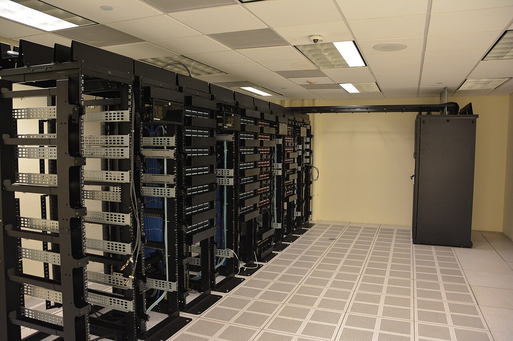
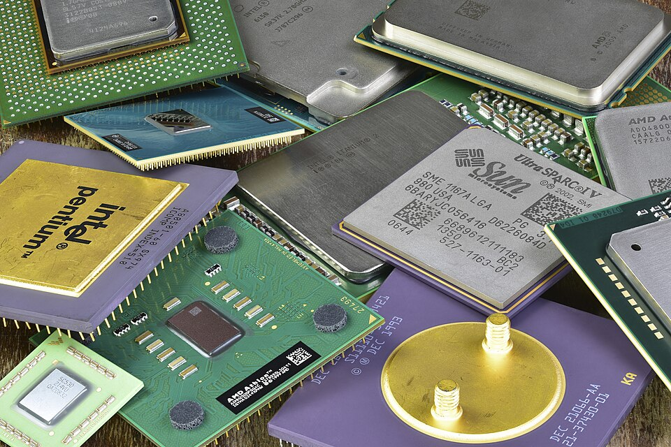

Page 4 · Research and image credits
References
These sources were used to research the effect of AI demand on PC component supply and prices. The numbered references on the other pages link to the relevant source below.
Information sources
- TrendForce (30 September 2026) — “AI Server Demand Sustains Memory Contract Price Increases in 4Q26, While Consumer-Side Pressure Persists”.
Used for the Q4 2026 DRAM and NAND contract-price forecasts, server-memory demand, PC DRAM supply pressure and GDDR7 demand/supply information.
Read the TrendForce reportPublished 30 September 2026; accessed 10 November 2026. Forecasts are for contract prices, not guaranteed retail price changes. - PriceMe New Zealand — “Zotac GeForce RTX 5070 SOLID OC 12GB GDDR7”.
Used for the New Zealand price-history example: NZ$1,199 at Computer Lounge on 26 June 2026 and NZ$1,999 on 29 October 2026 (a rise of NZ$800, or about 67%).
View the PriceMe listing and price historyAccessed 10 November 2026. One model and listing only; not a market-wide average or proof of AI being the sole cause. - PB Tech (9 February 2026) — “CEO Update: Pricing Volatility”.
Used for New Zealand context about local price increases and volatility affecting products containing memory, chips and hard drives, which PB Tech linked to worldwide shortages.
Read the PB Tech updatePublished 9 February 2026; accessed 10 November 2026. - TechSpot — Tim Schiesser (2 November 2026), “GPU Prices Are Spiraling Out of Control: Q4 2026 Update”.
Used for the international comparison that average gaming GPU prices across ten countries rose about 35% over the three months to October 2026, and for context on other causes of GPU price changes.
Read the TechSpot analysisPublished 2 November 2026; accessed 10 November 2026. International comparisons can differ from New Zealand retail prices.
Image credits
These photographs are saved in the website's images folder. The first time you set up the website, double-click Run Photo Downloader.bat in the main folder. It downloads smaller versions of the photographs and replaces the starter pictures. The source pages and licences are linked below.

Data-centre servers
Photo by Carl Lender, “Datacenter Server Racks (22370909788).jpg”. Licensed under CC BY 2.0. Original image and licence details. Saved as images/data_centre.jpg.

Graphics processor
Photo by Gormé, “GPU macro.JPG”. Licensed under CC BY-SA 3.0. Original image and licence details. Saved as images/graphics-card.jpg.

RAM modules
Photo by Peter Fiskerstrand, “Memory modules.jpg”. Licensed under CC BY-SA 4.0. Original image and licence details. Saved as images/ram.jpg.

Processor
Photo by Fx Mehdi, “Cpu-processor.jpg” (30 May 2019). Licensed under CC BY-SA 4.0. Original image and licence details. Saved as images/processor.jpg.

SSD and HDD
Photo by Santeri Viinamäki, “HDD and SSD 20180314.jpg”. Licensed under CC BY-SA 4.0. Original image and licence details. Saved as images/ssd-and-hdd.jpg.

Gaming PC
Photo by Prolete, “Gaming pc.jpg”. Dedicated to the public domain under CC0 1.0. Original image and licence details. Saved as images/gaming_pc.jpg.
Other graphics
- New Zealand graphics-card price chart — original chart created for this website using the PriceMe historical listing data cited above.
- AI & PC Building logo — original SVG logo created for this website.
All online sources were accessed on 10 November 2026. Prices and forecasts can change after this date.